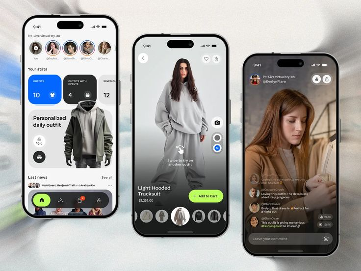
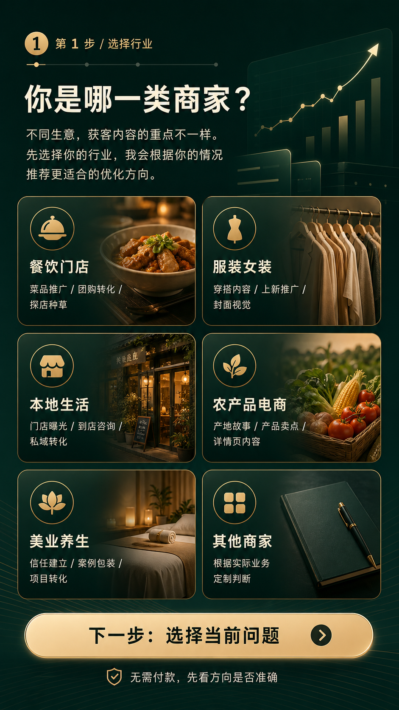
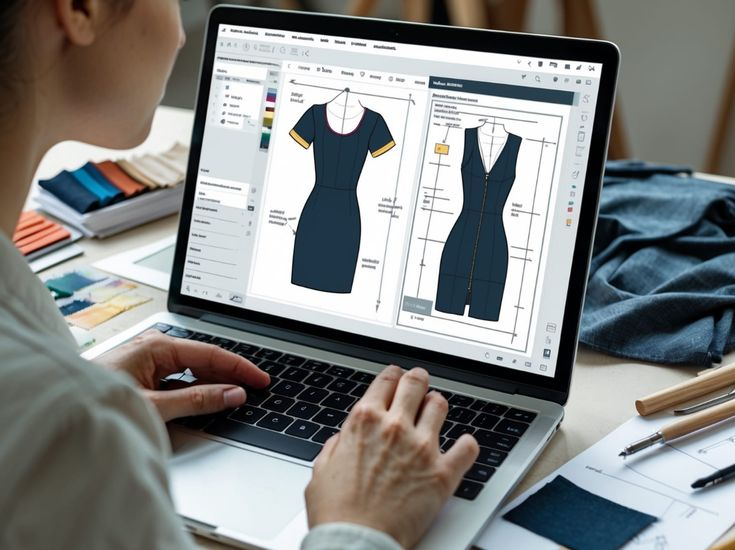
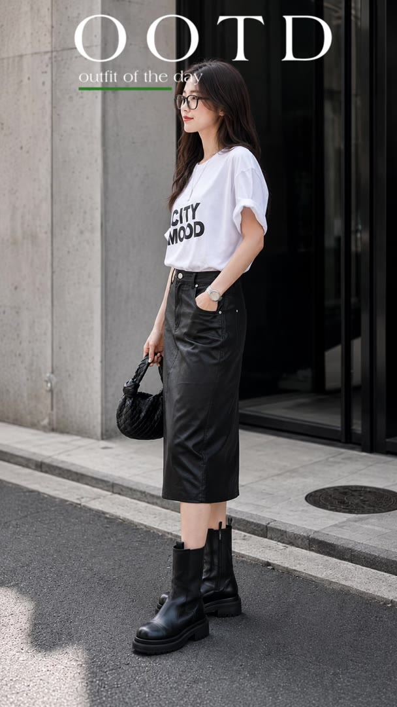
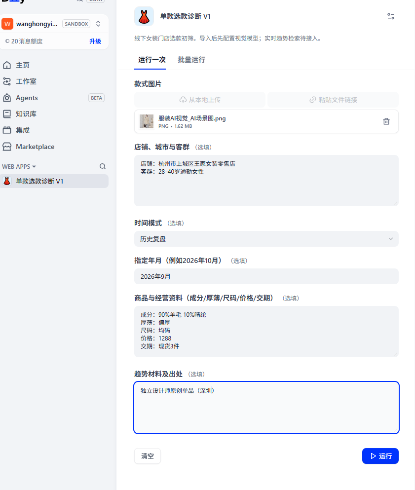

Dify · 智能体01
服装单款选款诊断智能体
将供应链经验转化为从图片与经营数据输入，到诊断、审核和行动建议输出的完整流程。
AI应用、智能体与内容运营复合型人才。既理解业务现场，也能完成方案、原型、内容和交付。
SELECTED WORK
精选六项代表案例，覆盖智能体、知识库、H5、短视频、电商运营与AIGC内容。

Dify · 智能体将供应链经验转化为从图片与经营数据输入，到诊断、审核和行动建议输出的完整流程。
四个独立案例：闲置物品种草、热门文案、课程学习与皮肤护理，均可观看实际运行演示。
从账号分析、选题脚本到现场拍摄、剪辑交付与数据复盘。

H5 · Experience用行业选择、痛点识别和建议路径，降低商家理解与沟通门槛。

E-commerce · Operations原创开发、测款、达人对接、直播排品与全链路运营，近30天GMV 51.43万元。

AIGC · Short Video覆盖选题、脚本、分镜、拍摄、剪辑、多模型视觉生成和剧情短片制作。
EXPLORATIONS · 19 VIDEOS
拍摄、剪辑、AIGC与剧情创作。点击作品即可播放完整视频。

PROFILE
一名既懂业务经营，也能把AI工具变成实际方案的复合型运营人才。
我拥有服装供应链、电商运营、商家服务与团队管理经验。近年持续实践Dify、扣子、知识库、AIGC和H5，将真实行业经验沉淀为可运行的应用原型与内容产品。
我擅长站在经营者和用户两端思考：先把问题说清楚，再选择合适的工具，完成从需求梳理、方案设计到测试交付的全过程。
先找到真实问题，再决定是否需要AI。
从方案、原型到内容和演示，形成可验证结果。
兼顾信息表达、视觉质感与实际转化目标。
根据使用反馈和数据表现调整执行链路。
ChatGPT · Claude · Gemini · DeepSeek · Dify · Coze · MidJourney · Stable Diffusion · 剪映 · HTML/CSS · GitHub
EXPERIENCE
长期经营经验与AI应用能力交汇，理解业务，也能推动执行。
SUPPLY CHAIN / E-COMMERCE
原创设计开发、选面料、制版改版、样衣大货、选款测款、达人对接、直播排品、主播培训与售后管理。
PLATFORM OPERATIONS
负责商家拓展与对接、产品定位包装、平台活动、直播协同和销售转化，推动商家从入驻到持续经营。
AI APPLICATIONS / CONTENT
独立完成智能体、知识库、工作流、H5原型、图文视频内容及本地商家项目。
CREDENTIALS
AI智能体应用开发工程师高级专业技术证书，以及人工智能与创业智慧课程认证。
CONTACT